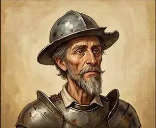
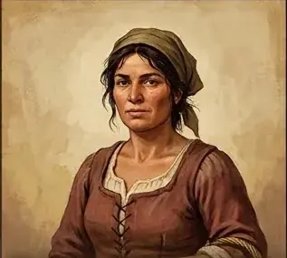
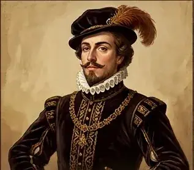

Explore / Society, Family & Human Experience
Don Quixote
by Miguel de Cervantes
ClassicEnglish
Alonso Quijano, a country gentleman of La Mancha, reads so many chivalric romances that he sets out as the knight Don Quixote, with his faithful squire Sancho Panza, to revive knight-errantry in a world very different from the one in his books.
12 chapters. Illustrated adaptation in 12 chapters.
Table of Contents
- 1 The Knight of La Mancha
- 2 The First Adventure
- 3 The Inn and the Knighthood
- 4 The Merchant’s Challenge
- 5 The Return Home
- 6 The Faithful Squire
- 7 The Windmill Giants
- 8 The Golden Age and the Goatherds
- 9 The Knight of the Lions
- 10 The Enchanted Journey
- 11 The Duke’s Court
- 12 The Last Dream of a Knight
Dramatis Personae
-

Don Quixote The knight of La Mancha, once Alonso Quijano - Sancho Panza The peasant who becomes his squire
-

Dulcinea del Toboso The lady of Don Quixote’s imagination - The Priest Parish priest and friend of Alonso Quijano
- The Barber Local barber and friend of Alonso Quijano
-

The Duke Host of the pranks at his palace
Chapters here are formatted for reading convenience from the authoritative edition.